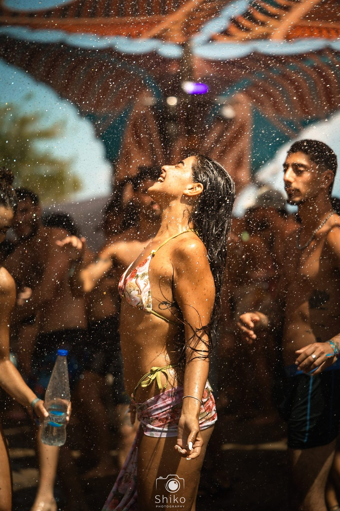

Mock-up · B Depth of Field
· background = placeholder photo goa0413
Shiko
EN
הקישו על מה שתרצו לחדד
גלישה
∞
ספורט
120 m
פסטיבלים
12 m
פורטרטים ומיתוג
1.5 m
H
1.5 m
פורטרטים
12 m
פסטיבלים
120 m
ספורט
∞
גלישה
∞ ›
וידאו
כל העבודות
18 חדרים
✕
1.5 מ׳
פורטרטים ומיתוג
Mayu Portraits
39
Maya Portraits
25
Amit
12
Shira
42
Noa
40
Eden
25
12 מ׳
פסטיבלים
FreeEarth
11
Ozora
15
Zoodana
23
Goaland
20
Bardak
20
Hippietipi
20
Sounds of Love
20
120 מ׳
ספורט
מכבי תל אביב
8
מכבי ראשון
20
ליגת המילואימניקים
11
∞
גלישה
Surfing
7
מעבר ל־∞
וידאו
שואוריל
soon
FreeEarth
פסטיבלים
✕

→
01 / 11
←
לגלריה המלאה ↗
כל 11 בתצוגת רשת
↓ החליקו למטה כדי לחזור למישור
עבודות
הזמנת צילום
WhatsApp